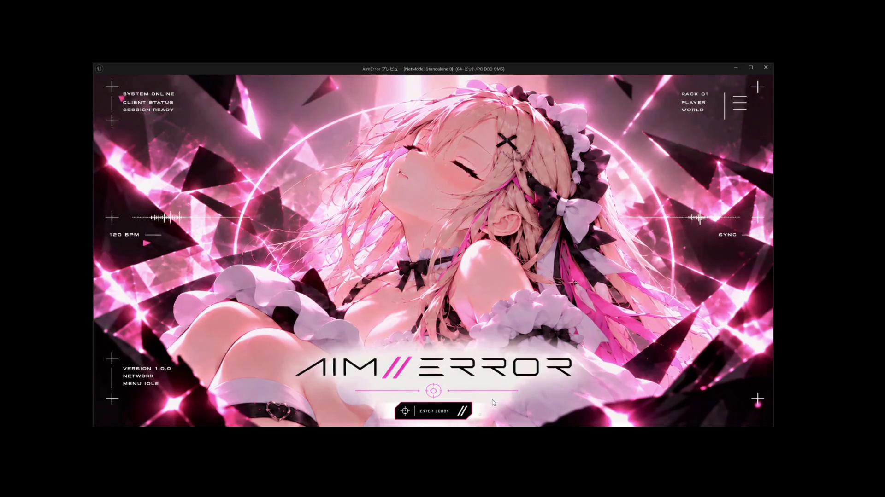
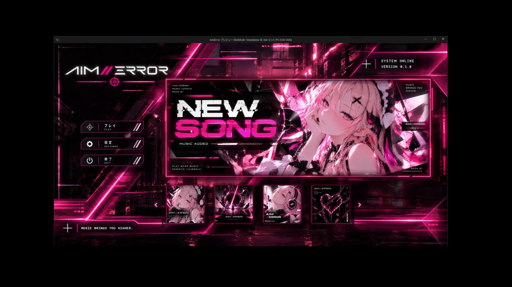
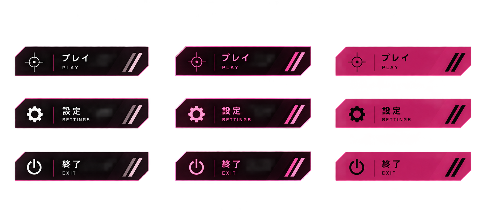
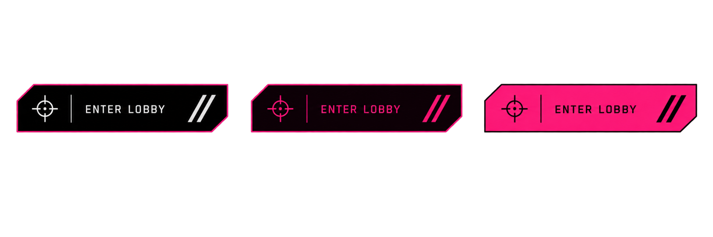
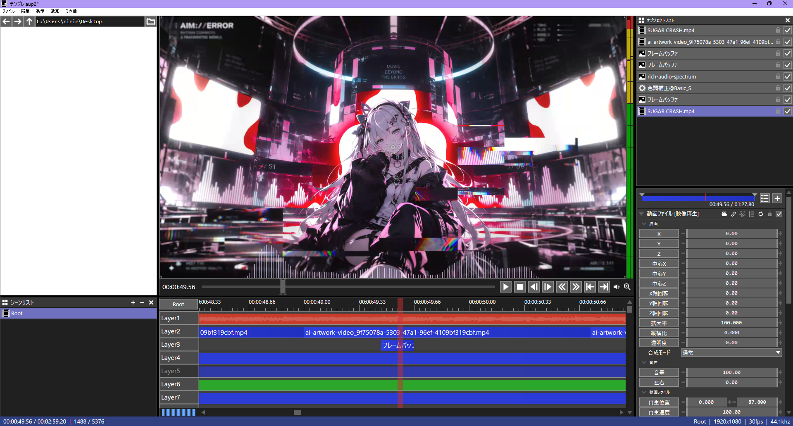
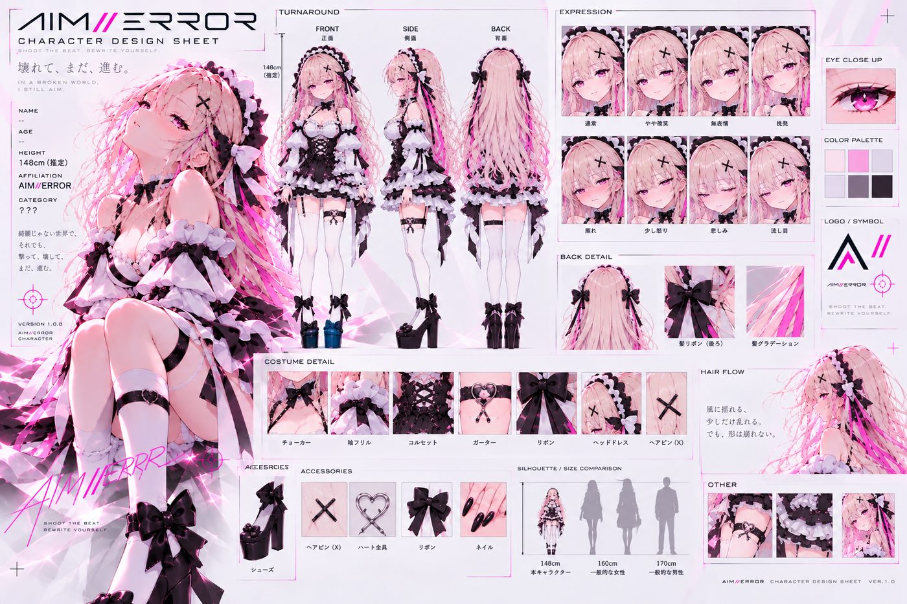
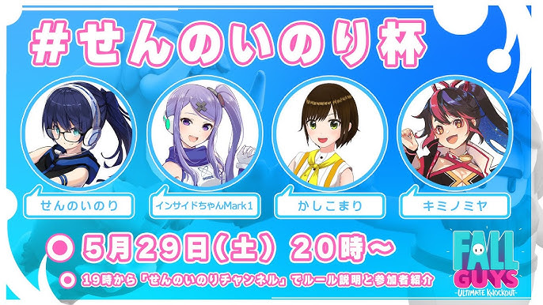

AI VIDEO / PROCESS
生成から実装まで、使える映像に仕上げる
静止画の世界観を基準に、動かしたい要素と崩したくない要素を整理してAI映像を制作しています。顔や衣装、ロゴ、背景の崩れや不要物を確認し、条件を変えながら再生成。完成した素材は実際のゲームへ組み込み、画面遷移として自然に使えるところまで調整・確認しています。
AI CREATIVE PORTFOLIO
個人で制作しているゲーム「AIM//ERROR」を中心に、生成AIを使ったキャラクター映像、ループアニメーション、ゲーム内MV、UI素材、Webサービス、Suno AIを使ったゲーム内楽曲などを制作しています。生成して終わりではなく、実際に使える形まで調整・検証することを大切にしています。
GENERATIVE AI WORKS
映像・UI・キャラクター表現・音楽・Web制作など、実際に使うことを前提に試作と調整を行っています。


静止画の世界観を基準に、動かしたい要素と崩したくない要素を整理してAI映像を制作しています。顔や衣装、ロゴ、背景の崩れや不要物を確認し、条件を変えながら再生成。完成した素材は実際のゲームへ組み込み、画面遷移として自然に使えるところまで調整・確認しています。
メニューで繰り返し再生することを前提に、キャラクターや背景に動きを付けつつ、ループ時の違和感が出にくいよう調整しています。
楽曲はSuno AIで制作しています。複数の生成ループ素材をつなぎ、ゲーム内の大型スクリーンに流す映像として編集し、カットの切り替えや音楽とのタイミングも含めて仕上げています。
AI ASSISTED UI DESIGN
ゲーム全体のデザインに合う方向を探しながらUI案を生成し、用途ごとに選別・調整して素材化しています。



EDITING
AIで作った短い素材をそのまま並べるのではなく、AviUtlなどで構成し、ゲーム内で使えるMVや映像として仕上げています。
ゲーム配信・実況ガイドライン検索サイト
ゲームごとの配信・実況ルールを探しやすくするために制作したWebサービスです。UI案、HTML/CSS/JavaScript、Cloudflare Workers側の実装、修正やデバッグまで、制作工程のほぼ全体で生成AIを活用して形にしました。
自分では要件整理、見た目や使いやすさの判断、動作確認、問題点の洗い出し、修正方針の決定を行い、AIとやり取りしながら改善を重ねています。
実際のサイトを見る ↗実際のサイトをスマホ表示で操作できます

生成AIを使って制作したキャラクター設定画です。三面図、表情、衣装ディテールなどを1枚にまとめ、キャラクターの見た目や世界観を整理するための資料として制作しています。

生成AIを使わず、Photoshopでフライヤーを制作した経験もあります。レイアウト、文字組み、画像配置などの基本的なデザイン作業に対応できます。
PROJECT / AIM//ERROR

Rhythm Game × FPS Aim Trainer / Unreal Engine 5
Unreal Engine 5で個人制作している3Dリズムゲームです。音楽に合わせて出現するターゲットをマウスで処理し、音ゲーの譜面をFPSのエイム操作に置き換えたゲームとして制作しています。
Blueprintを中心にノーツ、入力、判定、HUDなどを実装し、生成AIはキャラクター映像、MV、画面遷移、UI素材の制作や実装補助、検証・改善に活用しています。ゲーム内楽曲の制作にはSuno AIも使用しています。
※ このポートフォリオ内で紹介しているタイトル → ゲーム画面のAIトランジションは、実際に制作中の「AIM//ERROR」に組み込んで使用しています。
QUALITY / ITERATION
制作だけでなく、違和感や不具合を見つけて原因を切り分け、修正してもう一度確認する工程を重視しています。
見た目・動き・ゲーム上の条件を整理
AI生成 / UE5 / Blueprintで形にする
崩れ・不要物・不具合・操作感を確認
条件を一つずつ変えて比較する
修正後に同じ条件で確認して詰める
顔・衣装の崩れ / 元画像との差 / 不要物 / 不自然な動き / ループ接続
ノーツ挙動 / 入力 / 判定 / UI / カメラ / スポーン / 再現性
問題を言語化 → 仮説 → 条件変更 → 比較 → 採用または再調整
TOOLS & SKILLS
得意なのは、新しい技術や表現を知ったときに、実際の制作へ取り入れながら形にしていくことです。これまでイラストやLive2D、Photoshopでのデザイン制作に触れ、最近は生成AIを使った映像・UI・Web制作や、Unreal Engine 5でのゲーム制作まで、自分で試しながら制作の幅を広げてきました。
AIM//ERRORでは、生成AIで作った映像やUIをゲーム内で実際に使えるところまで調整し、ノーツの挙動、入力、カメラ、HUDなども動かしながら確認・改善しています。うまくいかないときは原因を切り分け、条件を変えて試し直し、納得できる状態まで詰めていく作業も得意です。新しいことを覚えるだけで終わらせず、実際の制作物として落とし込むところまでやることを大切にしています。